Everyday: user guide
Everything you need to set Everyday up and plan your days with it.
You're reading the guide for a computer. The pictures show the app on a wide screen: the rail on the left with the tabs and the views, the tab in the middle and the pane on the right (see On a computer). Where the guide says tap, on a computer it's a click; a To do row or an event opens in the pane instead of a sheet. In the menu at the top, Show the guide for → 📱 Phone switches to the phone guide (the choice is kept). Click a picture to enlarge it.
This is the guide for a phone. In the menu at the top, Show the guide for → 💻 Computer switches to the computer guide.
What Everyday is
Everyday is a planner for your days. There are two kinds of things in it: events, which already have a date (a concert, a visit, a class), and tasks, which still need one — you write them down and the app helps you decide when to do them. Every task takes some time, and once you put it on a day it becomes a block on that day's timeline, next to your events and calendar appointments. Tasks can also be tied to an event ("buy the tickets, two weeks before"), so the event carries its own to-do list. The app can suggest a plan for a day, a week or a month, keep Google Calendar in step, add the time it takes to get to a place, and plan meals and grocery runs together with the Ricette recipe app.
It works in the browser on a phone or a computer and can be installed like a normal app. Your data stays yours: it lives on your devices and in a private space on GitHub that only you can see. There is no account with us, no AI and nothing to pay.
What it is not: it is not a calendar (your appointments come from Google Calendar), not a notes app and not a tool for a team. One person, one set of data.
First setup
You need about fifteen minutes and a GitHub account (free). Everything happens in Settings: tap the gear at the top right. Settings is a short list, and each item opens a page of its own: My day, Planner, Travel, Categories, Shops, Advanced (itself a list: the connections, the task list, rules and your data, each on a page of its own), Language and appearance (the language, and the theme: Automatic follows your phone or computer, or always Light or Dark) and the Guide. The card at the top says whether your data is in sync, with Sync now (or Connect, before you have).
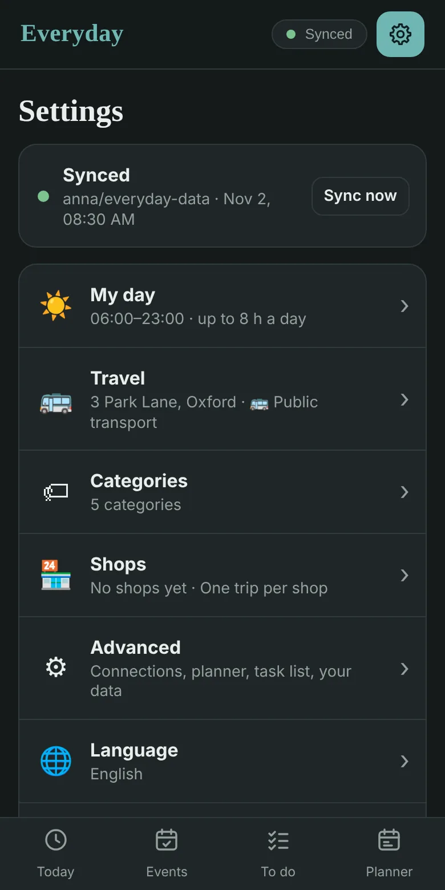
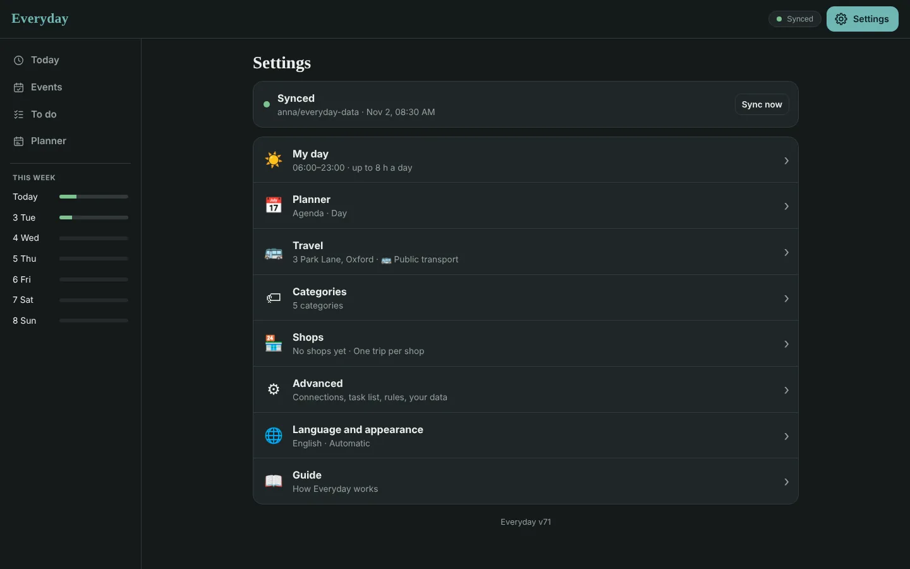
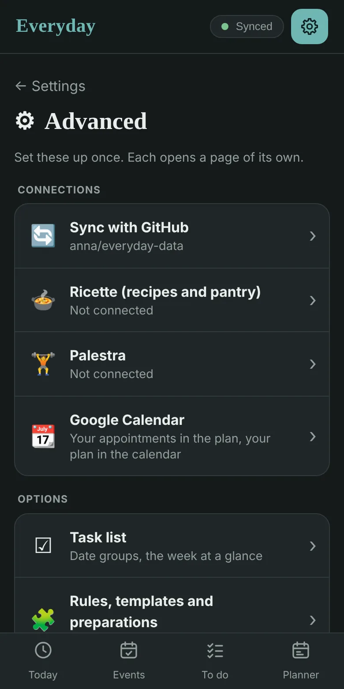
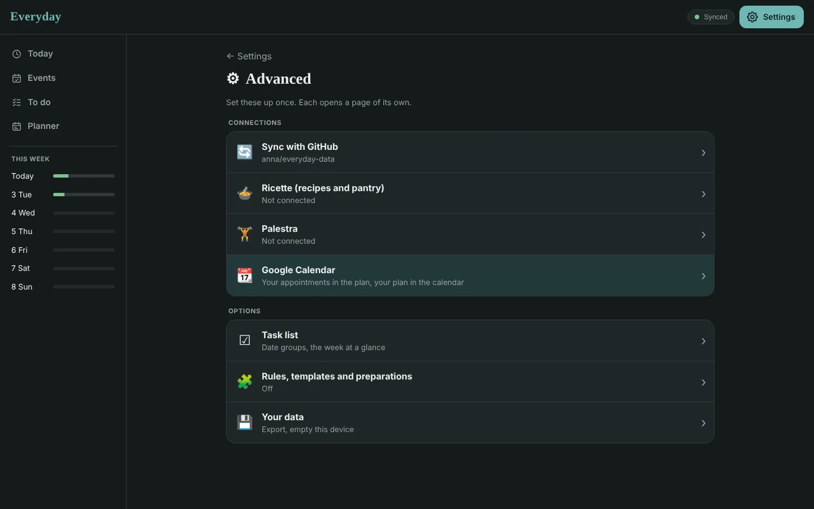
1. Install the app
Open the app's address in Chrome on your phone, or in any browser on a computer. On Android choose Install app (or Add to Home screen) from the browser menu; on a computer click the small install icon in the address bar. The app works without a connection too; new versions arrive on their own, and a bar offers to reload. The bottom of Settings shows which version you have.
2. Connect your own space on GitHub
This is where your data is stored and how your devices stay in sync.
- On GitHub, create a private, empty repository (a "repository" is just a folder on GitHub), for example
everyday-data. Don't copy anyone else's. - Create a personal access token (GitHub → Settings → Developer settings → Fine-grained tokens) that is allowed to read and write the Contents of that repository. A token is like a password made for apps.
- In Settings → Advanced → Sync with GitHub (or tap Connect on the card at the top of Settings), type your GitHub user name, the repository name and the token, then tap Save and test. The badge at the top of the app says Synced when it works.
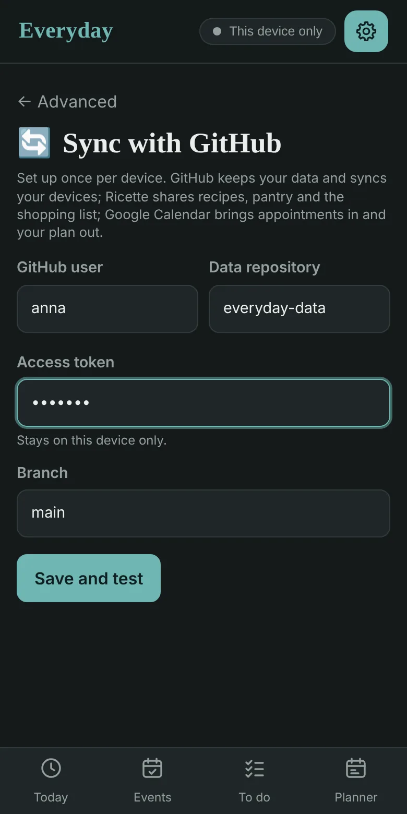
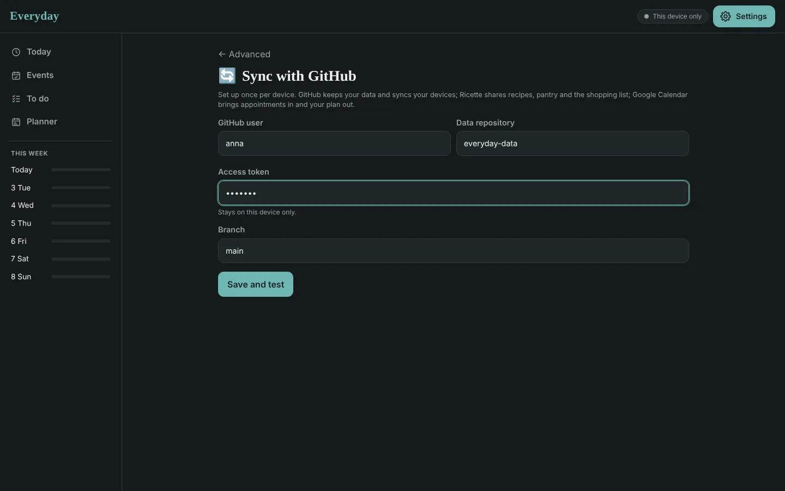
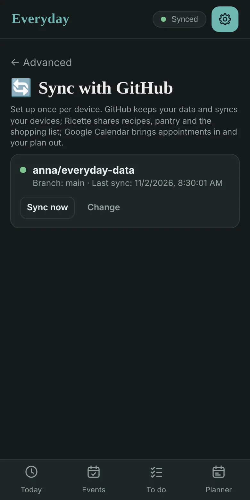
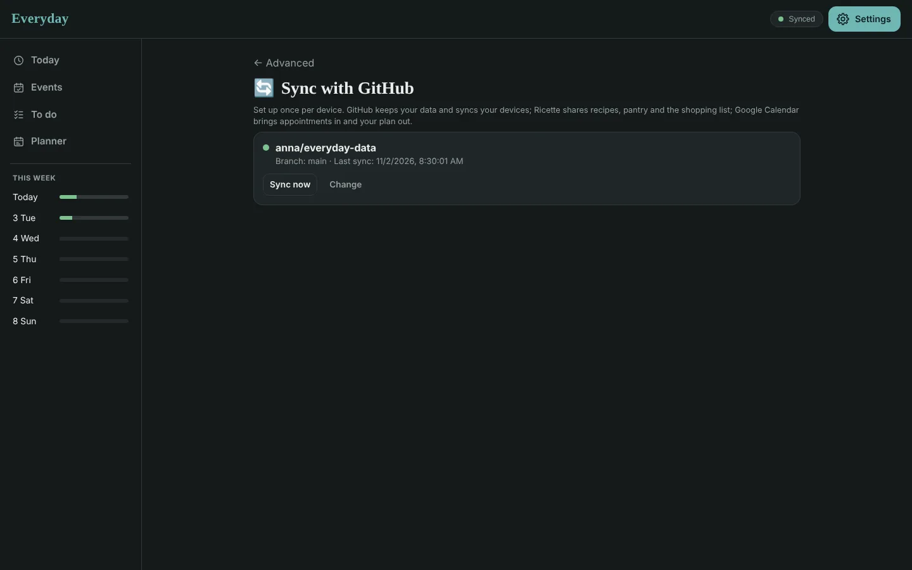
The token stays on the device. Do step 3 on every phone or computer you use: they all share the same data, within a minute of any change.
3. Optional: Ricette (recipes and pantry)
If you also use the Ricette app, type the name of its data repository in Settings → Advanced → Ricette (the same token must be allowed to use it). Everyday then knows your recipes and your pantry, shares the shopping list with Ricette and can plan meals from recipes.
4. Optional: Palestra (workouts)
If you use the Palestra workout app, type the name of its data repository in Settings → Advanced → Palestra (usually palestra-data; the same token must be allowed to use it). Its workouts then show up as routines, planned on the days of Palestra's active workout (its plan for the week), and every workout you finish there comes back with its real time. See Workouts from Palestra.
5. Optional: Google Calendar
This link runs on GitHub, not on your phone, so it needs a one-time setup on Google's side. Settings → Advanced → Google Calendar lists the steps; in short, you create a small Google Cloud project, allow it to use your calendar, and store three "secrets" in your repository. Once done, your appointments appear in the app and your plan appears in Google Calendar, with reminders.
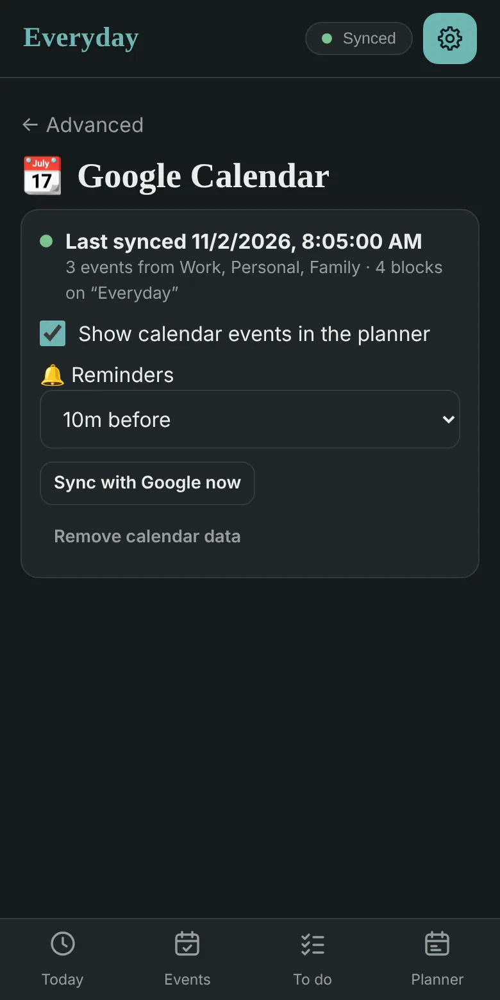
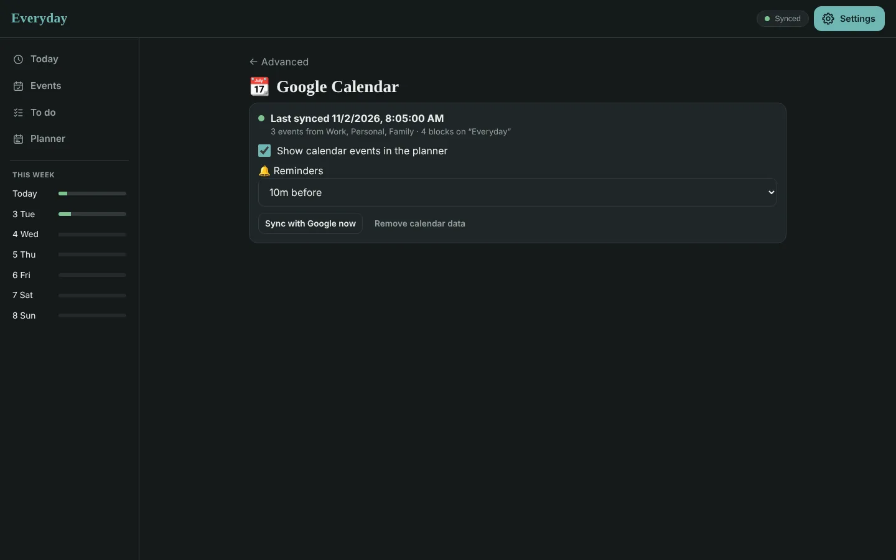
6. Travel
In Settings → Travel, type your home address and how you usually get around (walking, bike, public transport, car). That's all the app needs to add travel time to tasks that have a place. A Google Maps key is optional; without one the app uses free map services.
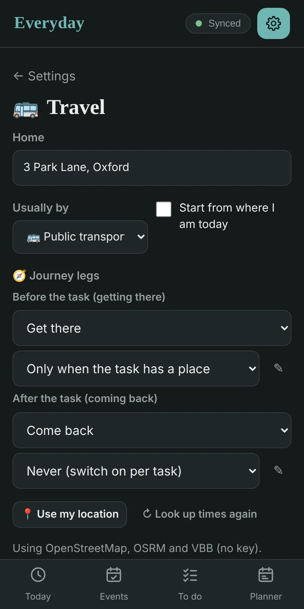
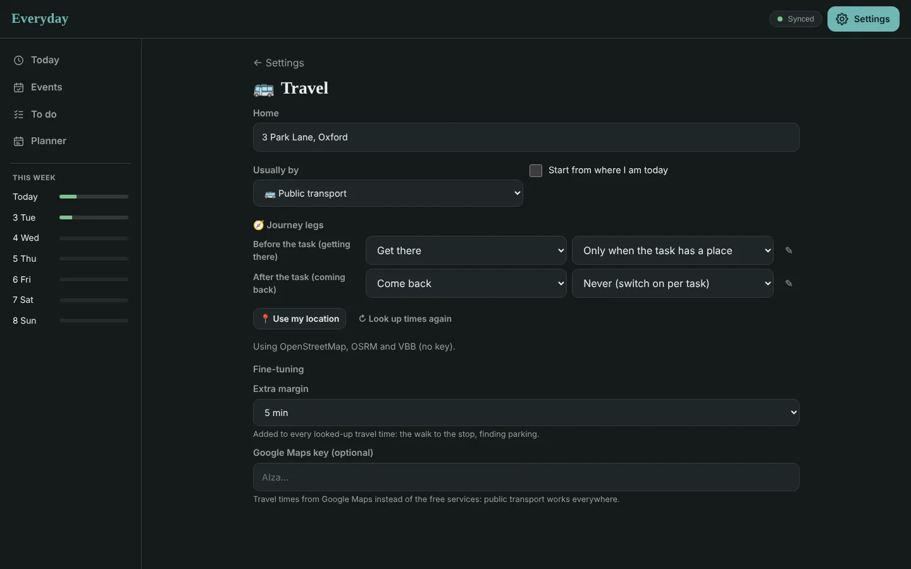
7. A second person
Each person needs their own repository, their own token and (if they want it) their own calendar setup. On their device, open the same app address and type their repository in Settings → Advanced → Connections. If the device held someone else's data before, the app asks whether to start empty — choose that. Empty this device, at the bottom of the same page, does the same at any later time.
The four tabs
| Tab | What it is for |
|---|---|
| Today | Home. The next move with its leave and start times, today's list, what is pressing, the week at a glance. Tapping the app's name brings you back here. |
| Events | Everything with a fixed date, as an agenda: the date on the left, each event with how ready it is, the empty stretches in between. A card on top prepares the ones that need it. |
| To do | Everything you keep, in views: Overview (everything, newest first) and the views you choose as tabs, such as This week, Shopping, Workouts, Home. Every view has the same toolbar: search, Filters and Sort and group. |
| Planner | Your plan as a Day, a Week or a Month. Day and Week are an agenda with the free time in between; one card on top says what's left to plan and to set, and Plan lays it out. |
On a computer the four tabs sit in the rail on the left, with To do's views and this week's days under them, and the pane on the right shows what you opened. The + sits at the bottom right of the tab.
The round + at the bottom right adds something from every tab; see Adding things. The order of the tabs is the order you plan in: see what's on today, put the dated things in, add the tasks around them, then let the Planner lay everything out. The gear at the top right opens Settings. On a phone, swipe left or right to move between the tabs. The badge next to the gear shows whether your data is in sync: Synced, Syncing, Offline, or Only on this device when you haven't connected yet.
Today
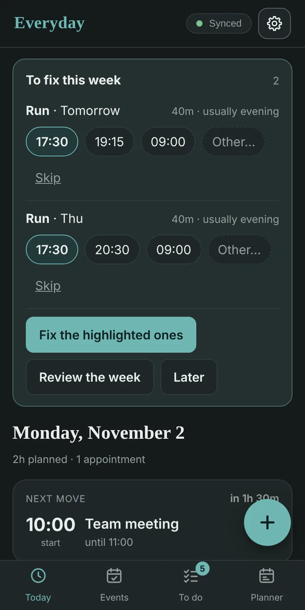
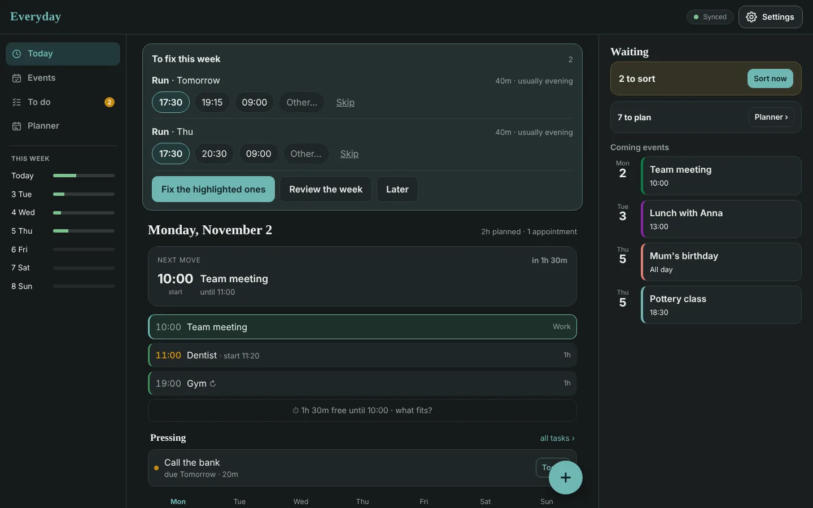
The next move card answers one question: when do I have to move? For a task with a place it shows two times — leave 11:00 → start 11:20 — and counts down to the leave time. On my way ticks the trip, Done finishes the task, the pin opens the address in Maps, Move opens the block. Below it, today's list shows every block and appointment in order (an orange time means "leave then"), and a line tells you how much free time you have until the next thing — tap it to see what fits.
Pressing lists what needs you: overdue tasks, tasks due in the next days that have no day yet, and tasks missing a detail. Today puts one in the next free slot; Fix opens it on the missing detail. The week strip at the bottom shows how full each day is; tap a day to open it in the Planner.
To fix this week. For a repeating task whose time you pick each week (see Recurring tasks), a card at the top of Today offers free slots for each day it's due: Run · Tomorrow with 17:30, 19:15, 09:00 or Other…. Tap a time to put it there, Skip to leave that day out, or Fix the highlighted ones to take the first offer for all of them. The card for the week ahead appears on Sunday at 18:00; you can move that to another day or time in Settings → My day → Card "To fix this week". Today's occurrences always show. On the weekly card, Review the week opens Routine on the week ahead, so you can see everything at once: what's in place, what's still to fix, what to skip or pause.
Every morning, the first time you open Today, what was left undone on earlier days goes back on the plan over the coming week; a line says how many things moved, with Undo.
A task that takes more than one day. If a day ends with only some of a task's steps ticked — say 3 of 8 — that day isn't moved: it stays on the plan as a trace, striped, with ◐ 3/8 and the steps you ticked. Only the 5 steps left are planned again, as a new block marked day 2 (then day 3, and so on). So looking back, you see every day the task was on your plate and what you did on each. A day where you didn't get to it at all simply moves, as before. Open the task and it says ◐ 3 of 8 steps done · on your plan since Mon 26 Oct · 3 days, with the done steps marked ✓.
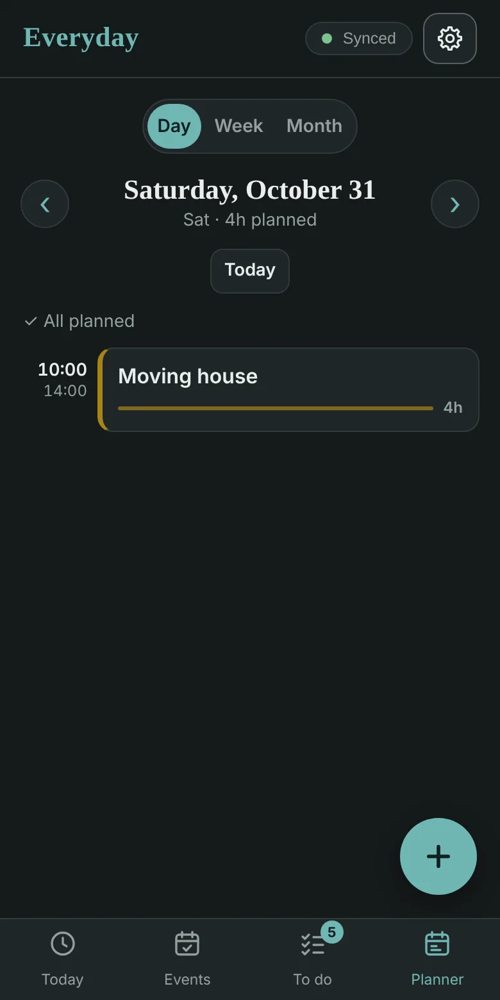
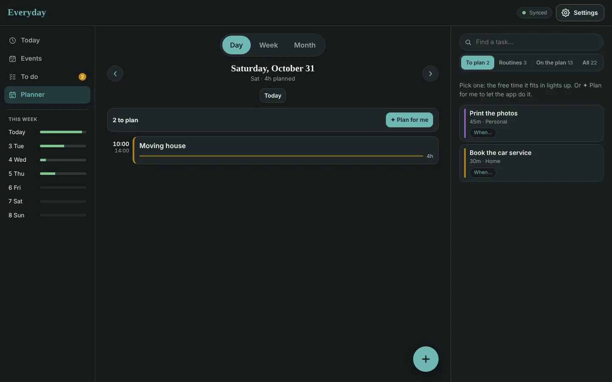
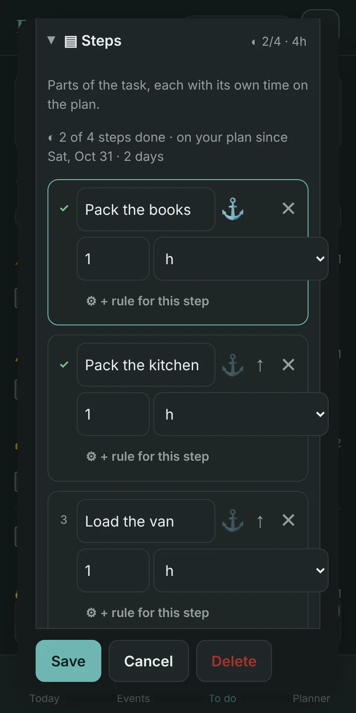
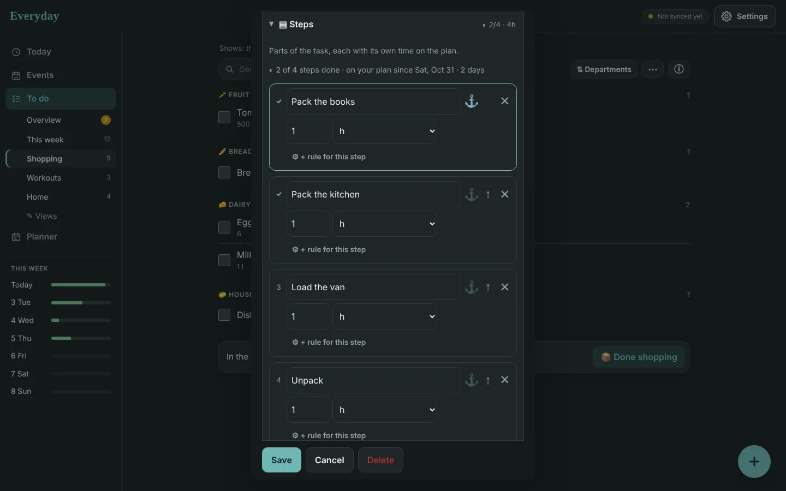
Doing a task: the timer
▶ Start now is in every task and in every block of today. The block moves to now (or a new one starts now), and a bar at the top of the app shows the task and the time running: Water the plants · since 08:30 · planned 10m · 0:07. Pause stops the clock while you're interrupted; Done ends it. The block then keeps the real time it took, and the task remembers how long it usually takes you (Real time · usually 25m in the task), which the planner uses next time. One timer runs at a time; starting another ends the first.
If you start late and the task now runs into what comes next, Today says so and offers Move the next ones to the planner's next good slots (with Undo). If you finish early, it offers Move up for the next task of the day, into the time you freed.
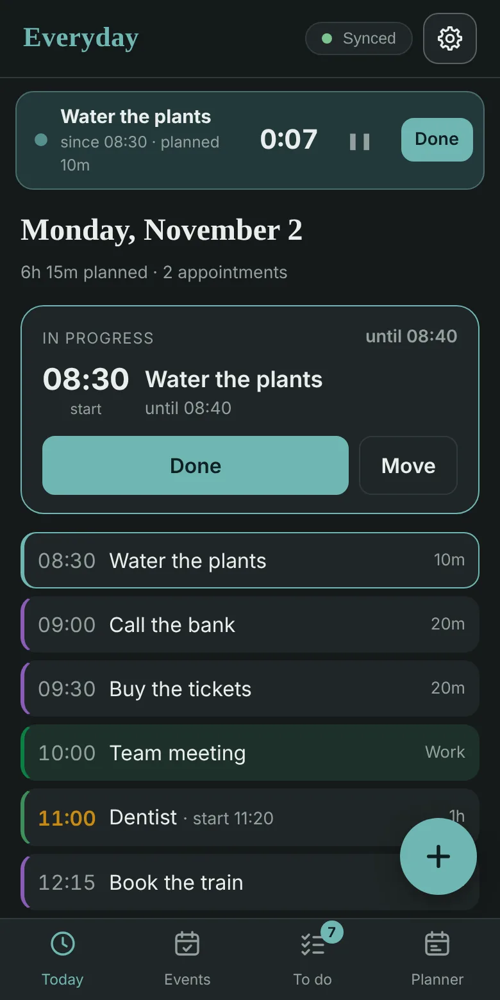
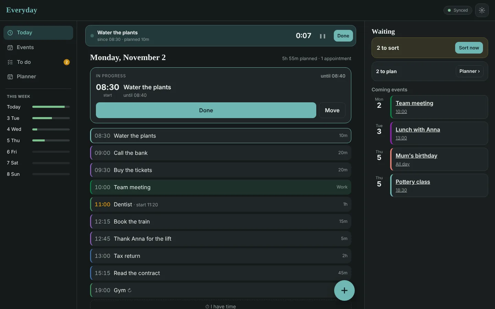
Events
An event is something with a date you don't choose: a concert on the 20th of May, the dentist on Thursday at 9, Luca's wedding in June. You put it in as soon as you hear about it, and from then on it is on the plan, in Google Calendar, and on Today when the day comes. The planner never moves an event.
The agenda. Coming events are one per row, with the date on the left. A thin bar says how ready an event is (its tied tasks done), and a dashed row marks the empty stretches, Nothing for 5 weeks · + an event. When some events have tasks still to plan, a card on top says so — 1 event to prepare · 2 things — and Prepare proposes a day for each, dashed under its event, until you tap Add or Cancel. Search and Filters (yours, from calendars, to prepare) sit below it.
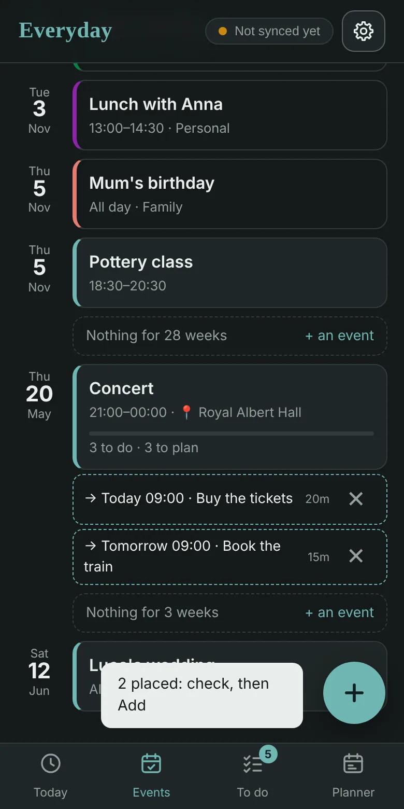
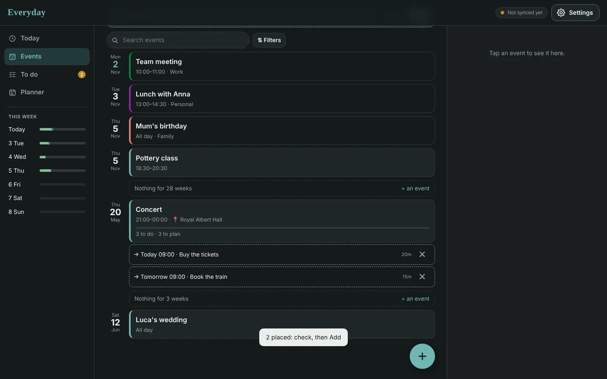
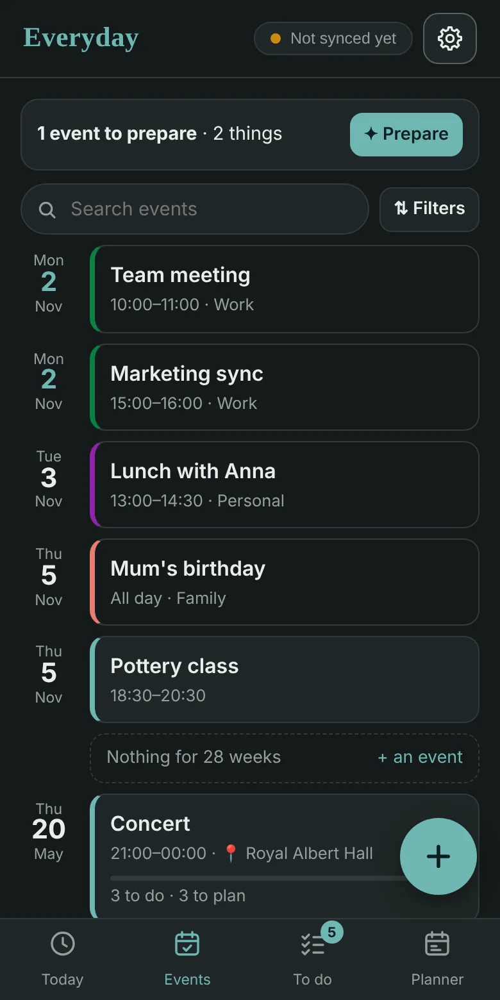
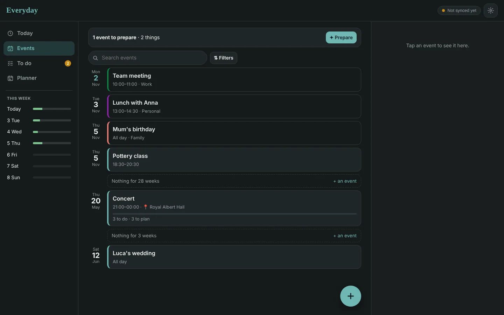
Adding an event
Tap + on the Events tab (on the other tabs, hold the + and choose Event): Concert 20 May 21:00 @Arena 3h, Dentist 12/11 at 9, Luca's wedding 12 Jun, Pottery class thu 18:30 2h. The app reads the date (20 May, 20/5, fri, tomorrow), the time (21:00, at 9), the place (@…) and the length (2h). Without a time it is an all-day event. Without a date the editor opens and asks for one — a date is the only thing an event needs.
Tap an event to open it. It is the same editor as a task, with the same parts in the same order; only the first one differs:
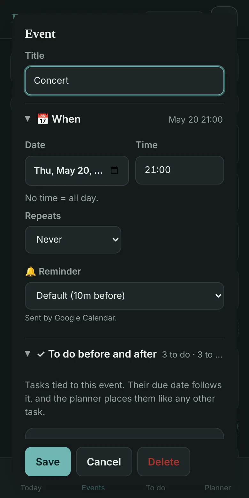
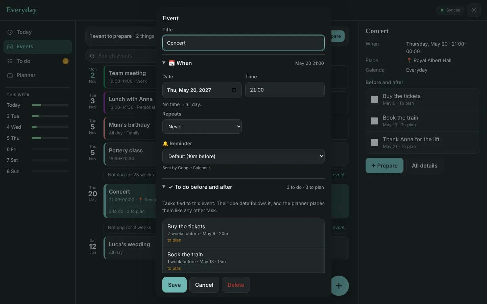
| Part | What you set there |
|---|---|
| When | The date (required) and the time (leave it empty for all day); repetition for a weekly class; the reminder. |
| To do before and after | The tasks tied to this event, with their lead time and whether each is planned — see below. |
| Length and category | How long it takes (two hours until you say otherwise), a buffer after it, the category. |
| Place, Steps, Checklist, Notes | Exactly as for a task: a place adds Get there with the real travel time, so Today shows leave 20:15 → start 21:00. |
Tasks tied to an event
This is what makes events useful. In the event, + To do before / after adds a task with a lead time: Buy the tickets · 2 weeks before, Book the train · 1 week before, Thank Anna · 1 day after. Each one is a normal task: it appears in To do (marked 📅 with the event's name), gets its due date from the event, shows up in Pressing when it slips, and the Planner places it like anything else. Move the event and all its tasks move with it.
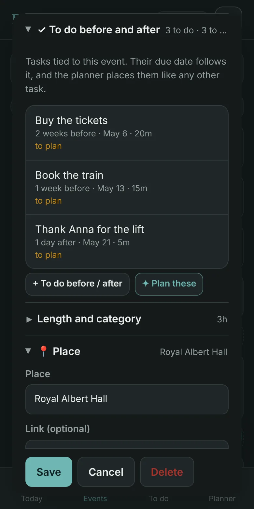
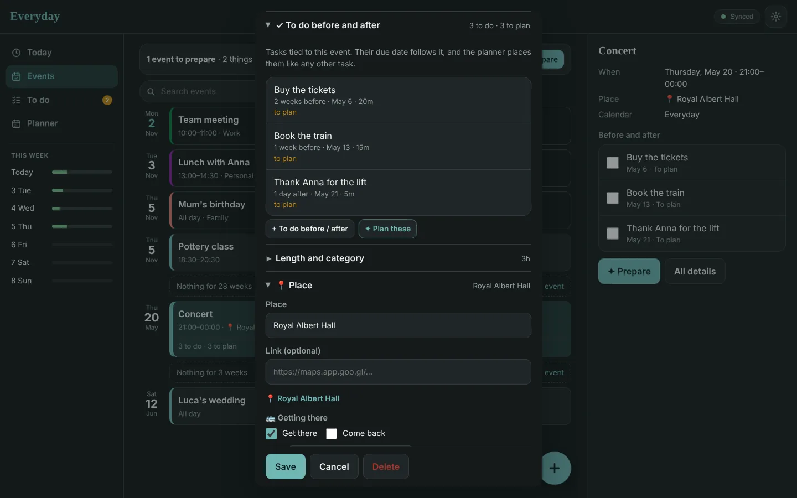
Inside the event you see at a glance where you stand — 3 to do · 2 to plan, then ✓ all done — and Plan these lays the open ones out over the days before the event. The same badge shows in the Events list and on Today's next-move card. Open a tied task and its When part says For the event "Concert" · 2 weeks before; change the lead time there, or untie it.
Events imported from Google Calendar can take tied tasks too: open one from the Events list and add them the same way. The event itself stays Google's (you change it there), but its preparation lives here.
Events on the plan
On the Day agenda an event is a row with a 📅 and a stronger colour (in the By the hour layout, a block you can drag by hand; there, tapping an empty spot on the timeline makes an event at that time); the planner, the morning re-flow and Plan leave events alone and work around them. Events go to Google Calendar like everything else, all-day ones as all-day entries. An event with a time is always one block: change it after the fact and that block changes; delete the event and it leaves the plan, past days included.
To do
Views
To do holds everything you have to do: the one-off things, the ones that come back (routines) and the shopping. It isn't split into fixed lists: you look at it through views. A view is a set of filters with a name; the ones you tick are the tabs on top, three to a row, wrapping instead of scrolling. The starting views are Overview, This week (today and this week), Shopping, Workouts (Health) and Home; To plan, Meals, Work and Personal are there but not ticked.
Under the tabs, one line says what the view shows: Shows: Home. Then the toolbar, the same in every view: search, Filters and ▤ Sort and group.
- Filters opens a sheet with Kind (once, repeats), State (to plan, planned, done), When (today, this week, later, no date) and Group (your categories, and No group). Closed, the button only says how many are on: Filters · 2. If you changed a view's filters, As before goes back to the saved ones and Keep for this view saves them. Type a name below and tap Save as view to make a new view of them.
- ▤ Sort and group picks Date added, When, Group or Kind. Tap the chosen one again to reverse it: the button then says Newest first or Oldest first, or shows ↑ ↓. By group, the order is the one in Settings → Categories (drag them to change it), with No group first.
- ✎ Views, the last box of the tabs, ticks views on and off the tabs, moves them with ▲ ▼, and with ⋯ renames or deletes them. Deleting a view deletes nothing that was in it. Overview always stays first.
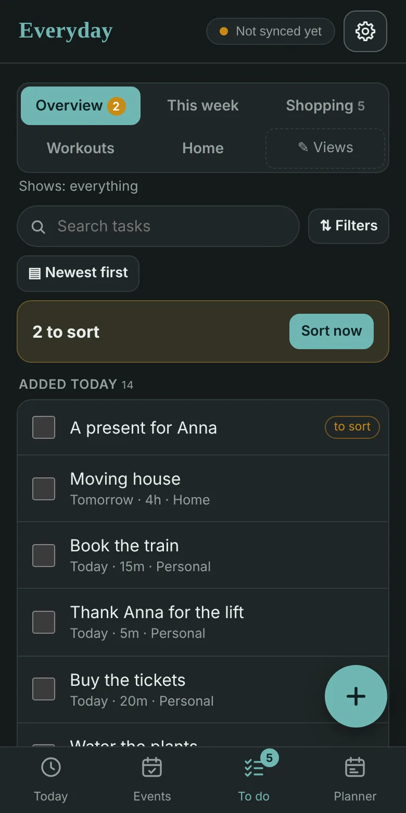
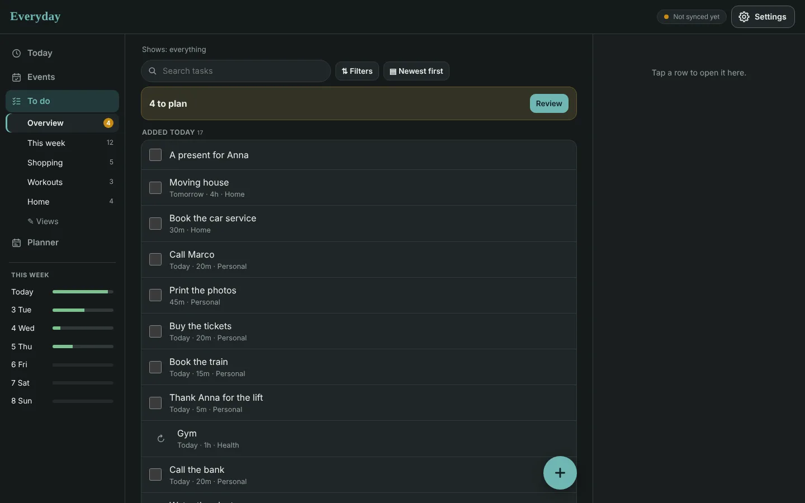
Overview and Sort now
Overview is the list of everything, one row each, newest first. It's where you throw things in and sort them later. What misses a group, a when (for one-off things) or a length carries a to sort tag. Tap the row to sort it there: + Group, + When and + Length appear, and Details opens the task. Something to sort also shows in the views it belongs to, with the same tag.
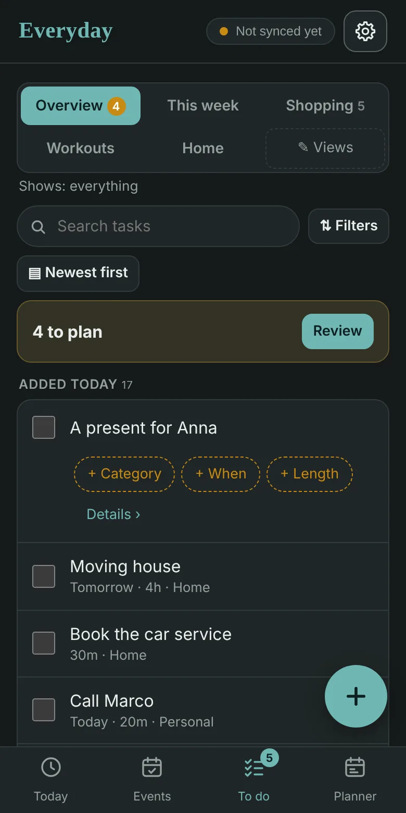
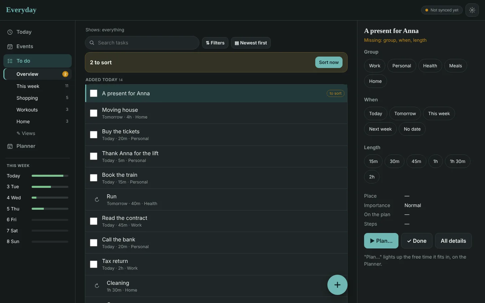
When there are some, a card on top says 3 to sort with Sort now: it takes them one at a time, full screen, with the groups, the when (Today, Tomorrow, This week, Next week, No date, ↻ Repeats) and the lengths one tap away. Next goes on, Delete removes it, Stop for now closes.
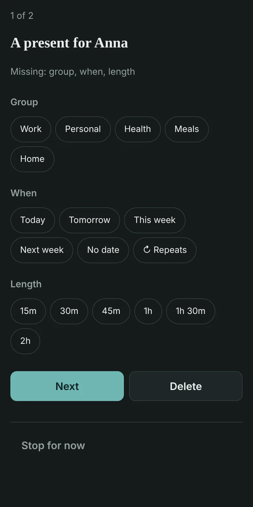
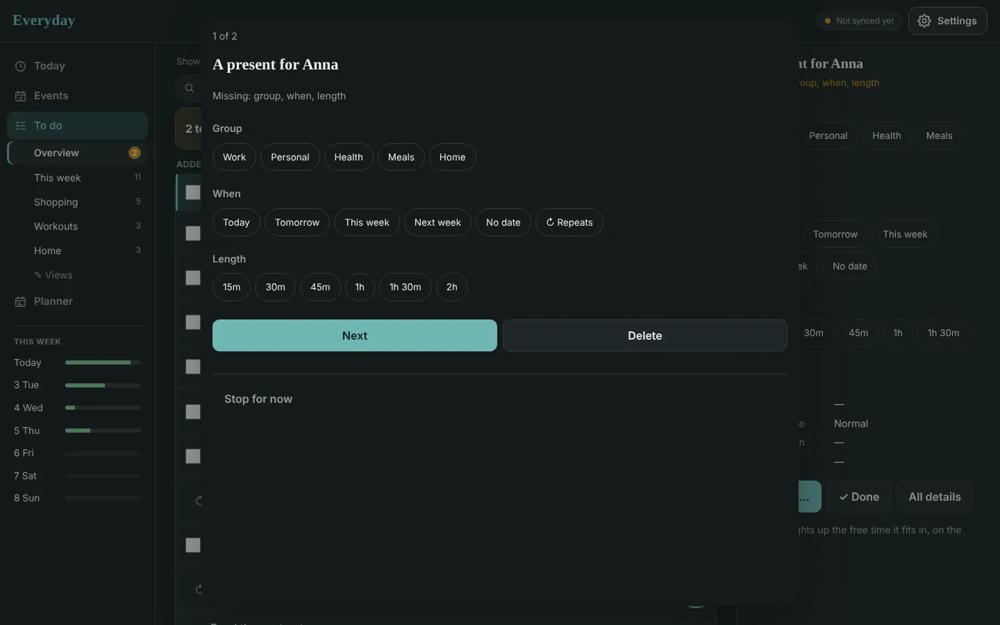
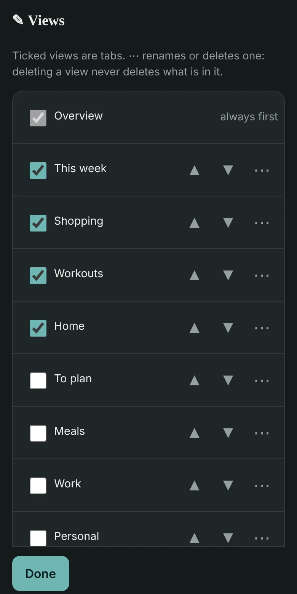
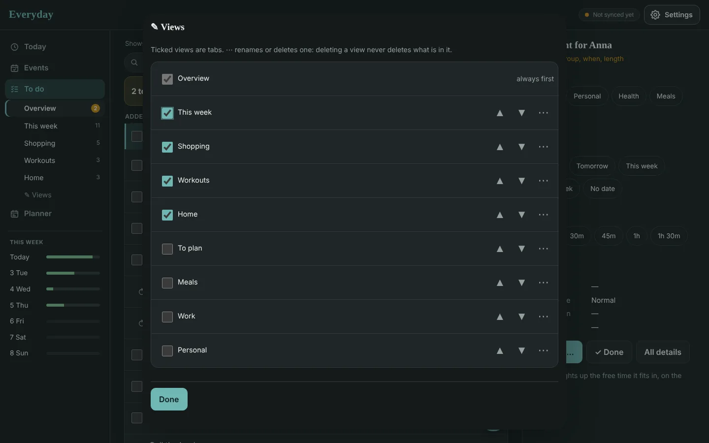
Adding things
Tap the round +. A sheet opens with one field. On To do it adds to the view you're on, and says so: Add to Home. The field already holds what the view asks for, in plain text: #home in Home, this week in This week. Type just the rest (Clean the oven 1h) and you know where it lands; you can delete it too. If what you type wouldn't show in the view, an orange tag says so: won't be in Home. A task can have several groups (#home #personal). The buttons on top choose Once, Repeats or To buy; the other tabs also offer Event and Meal.
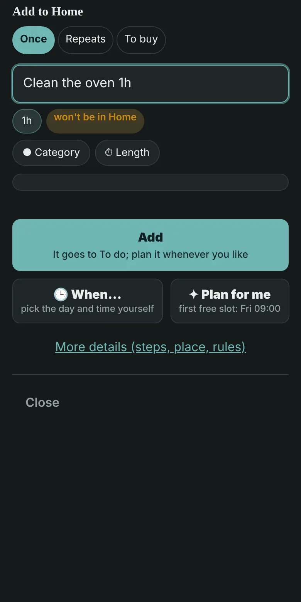
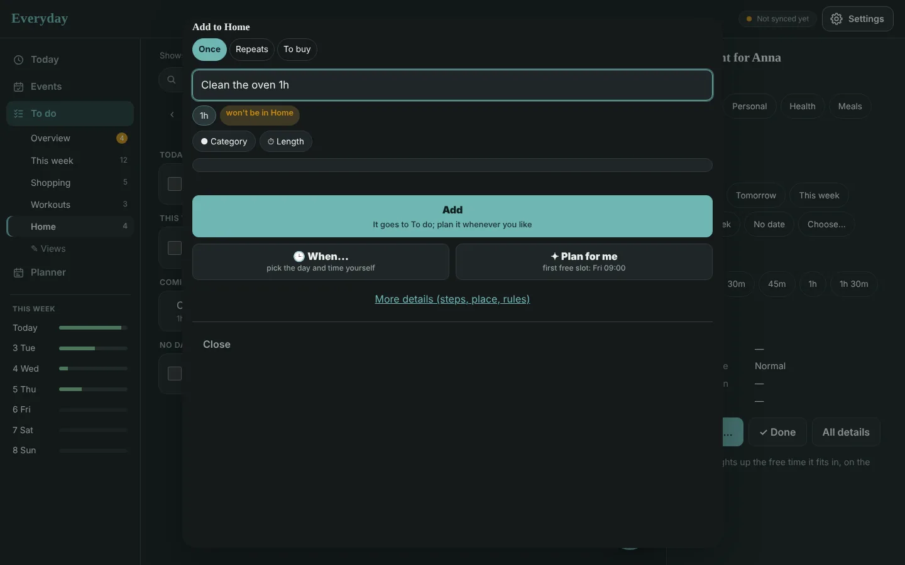
A few shortcuts save you from opening the task: Dentist 1h sets how long it takes, !1 to !5 how important it is (1 = very), #work a category (#work #home for two), @Via Roma 12 the place, fri or tomorrow the day, by fri a due date, every mon a weekly repeat. Under the field, chips show what the app understood: 20m · Work · due Fri.
For a task there are three ways to finish:
- Add, the big button, puts it on the list, to plan whenever you like. Pressing Enter does the same and keeps the sheet open for the next one.
- Add and plan puts it in the first free slot right away; the button says where (first free slot: Wed 09:00). With a day and a time (
Call Marco tue 15:00) it goes exactly there. - Choose when… opens a sheet with the day, time and length, filled in with the first free slot: change them yourself, then Plan it. That's the difference from Add and plan, which decides on its own.
More details (steps, place, rules) opens the full editor. A new task shows on top of its list under Just added, and for a few seconds a bar says where it went, with Undo. The bar leaves the + free: tap it for the next one and the bar closes.
On Shopping and Events, Enter adds the line and keeps the sheet open, listing what you've added so far. Meal opens the meal editor.
Hold the + (or right-click it on a computer) for the full menu: Task, Event, From a routine, Meal and Import a list, which takes a whole list you paste in, one task per line.
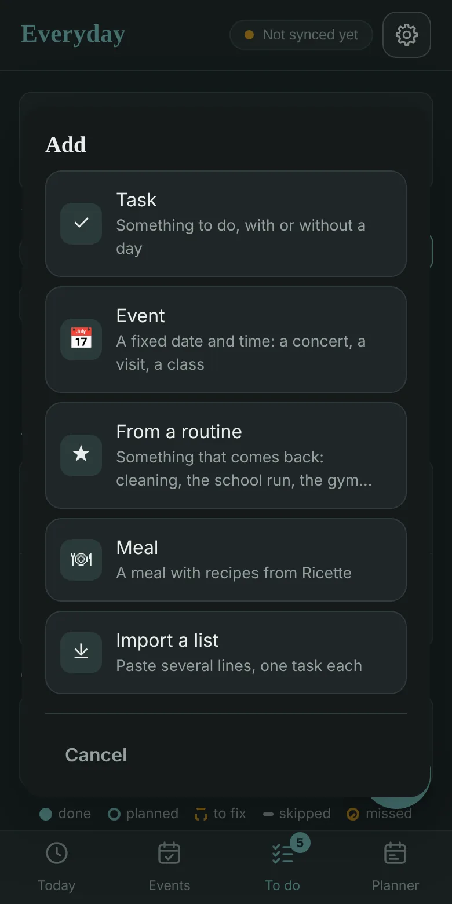
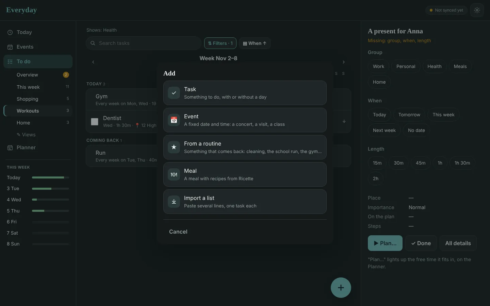
In views tied to another app, the + also has on top what you do there. In Workouts: ▶ Plan a workout (pick one of Palestra's workouts, then the day and the slot) and New in Palestra ↗. In Meals: ▶ Plan a meal and New in Ricette ↗. What you type in the field below stays only in Everyday. In Shopping the + adds to the list (shared with Ricette when connected).
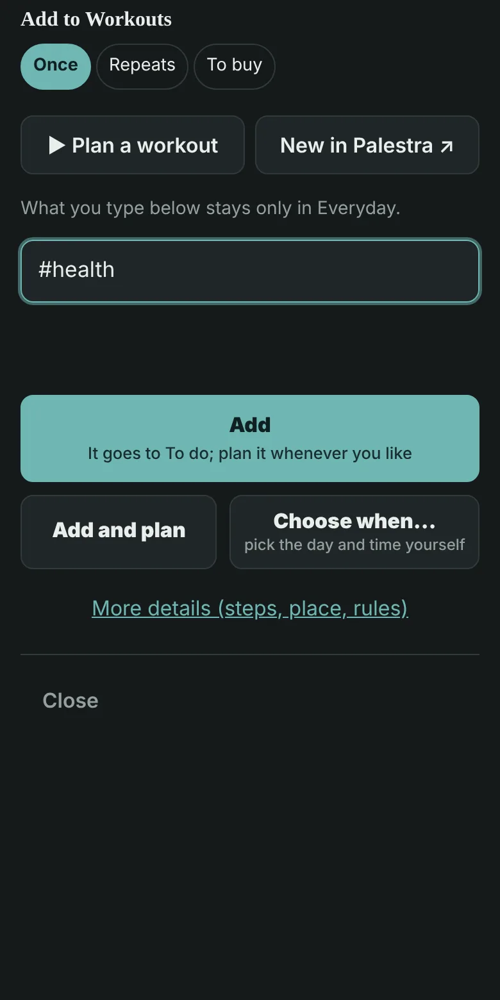
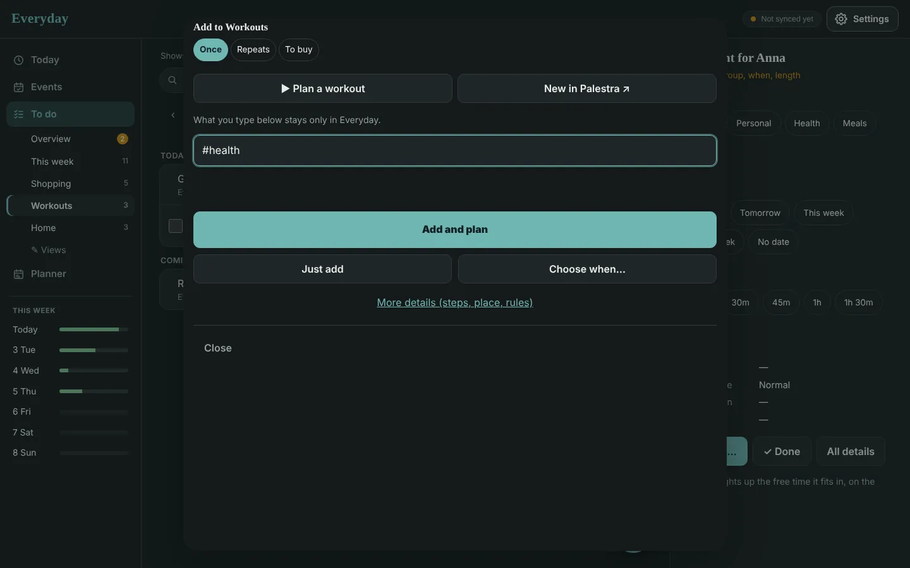
Tap a task to open it. The task is split into parts you can fold; anything you don't touch keeps a sensible value.
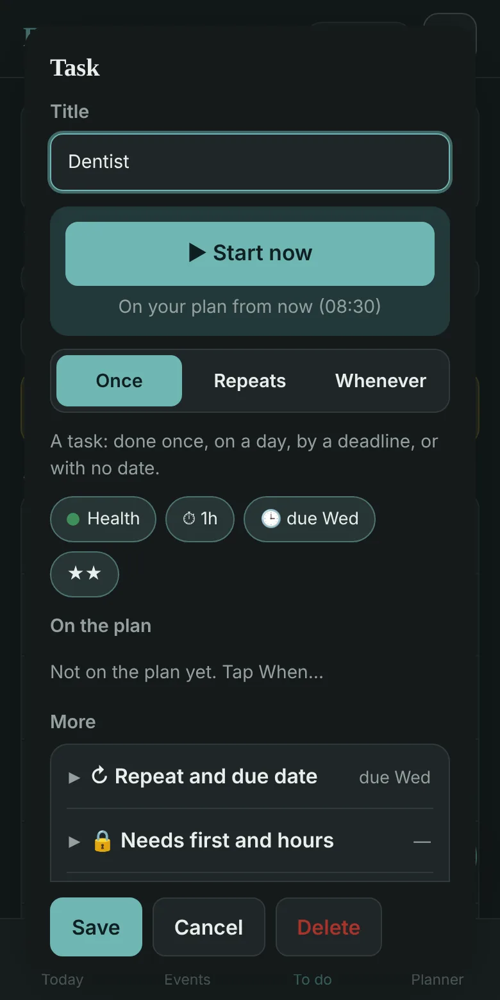
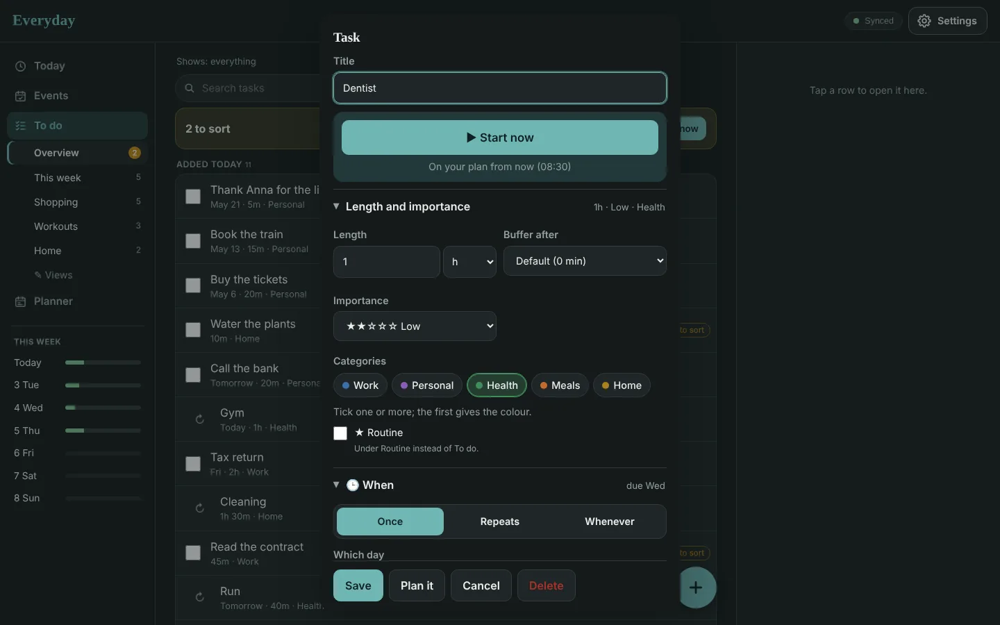
| Part | What you set there |
|---|---|
| Length and importance | How long it takes (30 minutes until you say otherwise), a buffer after it (a few spare minutes added to the block), how important it is, one or more categories (the first one gives the colour), and the Routine switch. |
| When | First one choice: Once, Repeats or Whenever (see below); then only what that needs: a day and a time, a due date, the part of the day you prefer, things that must come first (type a few letters to find a task, or make a new one on the spot), time windows (e.g. office hours), the reminder. For a task tied to an event: the event and the lead time instead of a due date. |
| Place | An address or a link. With a place, the app adds Get there (and, if you like, Come back) with the real travel time. |
| Steps | Parts of the task, each with its own length; on the plan every step gets its own time. Tap ⚓ on the step the task's time refers to (e.g. Workout at 19:00, so Get there goes before). |
| Checklist | Things to tick while doing it. |
| Rules | What should happen before or after, depending on how it goes (something to prepare before, a follow-up if it fails, a grocery run before a meal…). Shown when Rules, templates and preparations is on under Settings → Advanced; day templates and preparations are then listed on that page too. |
| Notes | Free text. |
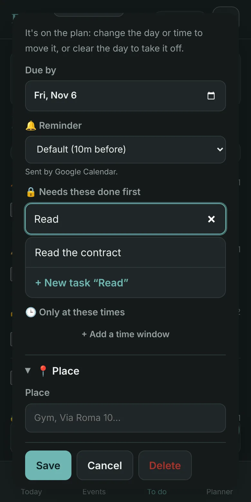
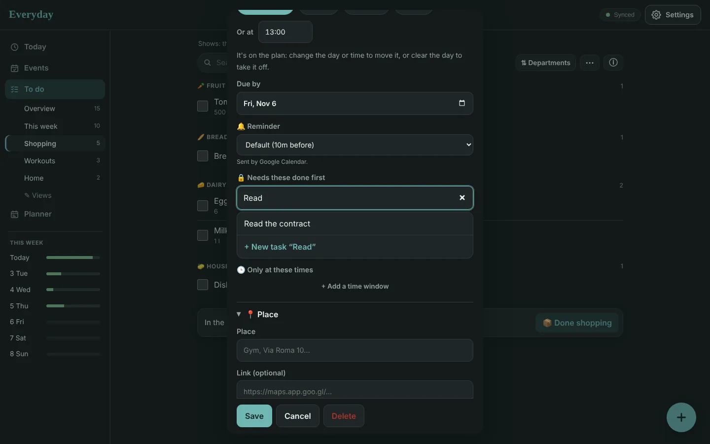
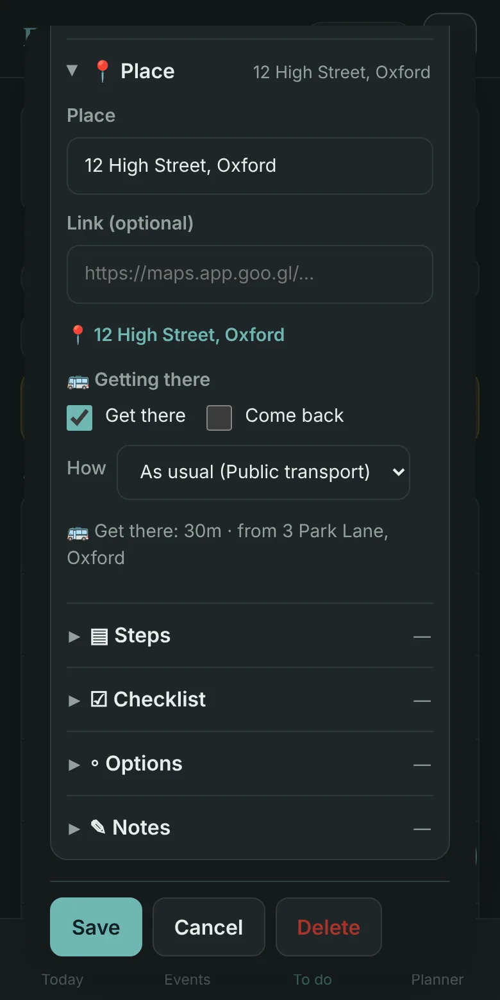
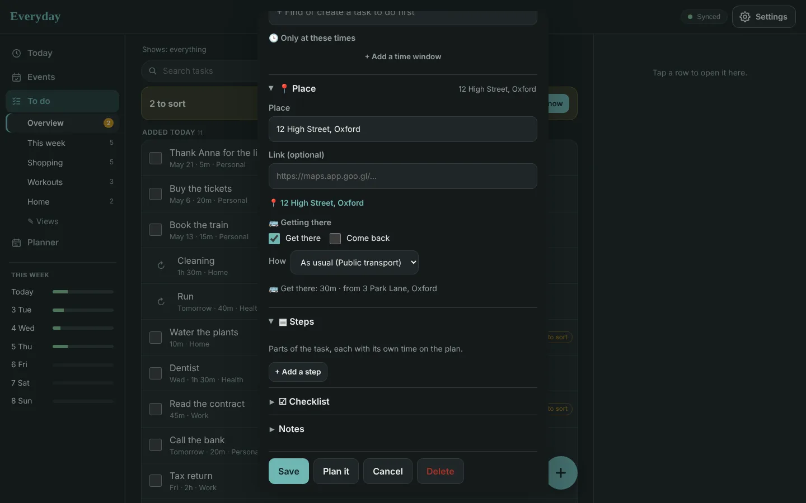
Routine
Routines are what comes back: cleaning, the washing, picking the children up from school, the gym, the run, meals. Some have a fixed rhythm, some come back now and then. You don't need them every day; you look at them once a week and adjust. Every task that repeats is a routine, and so is every task where you tick Routine. They show in the views with everything else (filter Kind · Repeats); to have them all together, pick that filter and save it as a Routine view.
Where there are routines, the view also reads by the week. On top: Week 2–8 Nov, with how it's going (9 of 12 in place · 2 to fix); ‹ › go to other weeks, and tapping the week comes back to this one. Each routine has its seven days, with these marks:
| Mark | Means |
|---|---|
| ● full | done |
| ○ ring | on the plan |
| dashed square | to fix: it's due that day, the time isn't picked yet |
| – dash | skipped (or paused) |
| crossed ring | missed: the day passed and it didn't happen |
A routine without a rhythm has a ▶ instead, to plan it (pick a day and a slot); holding the + and From a routine does the same. The + with Repeats adds a new routine (Bins out every thu 10m).
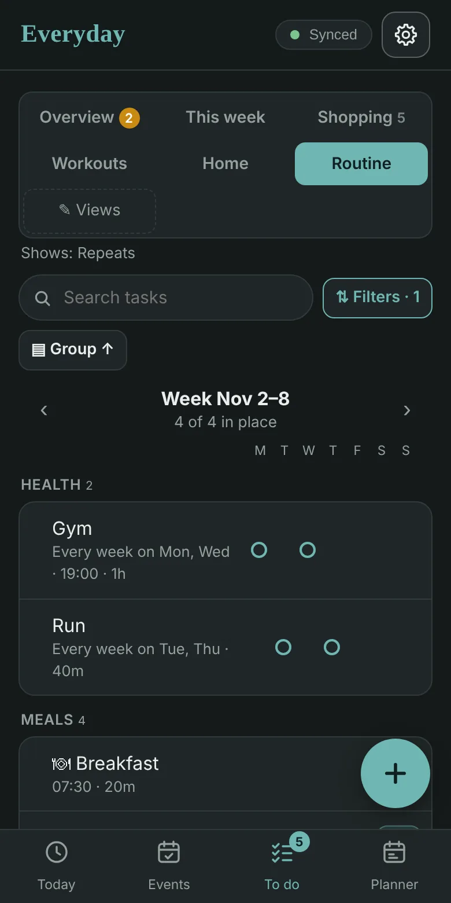
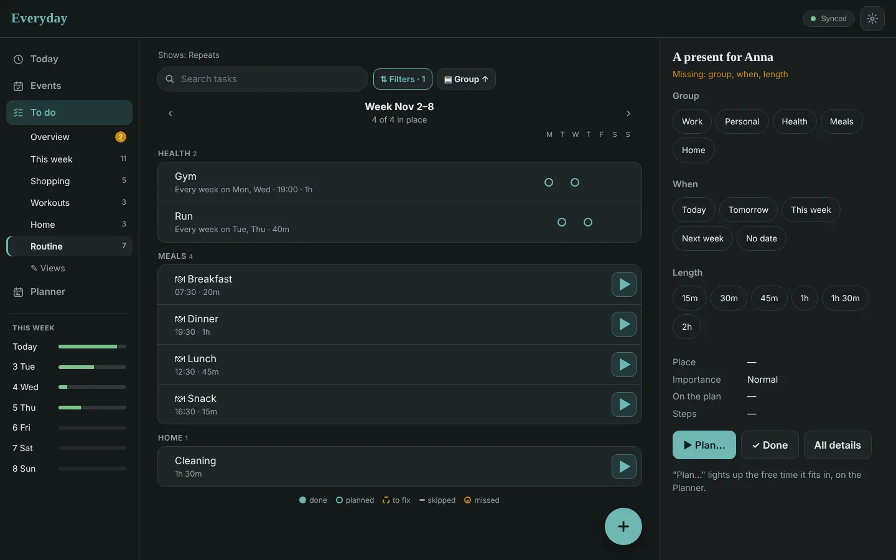
Workouts from Palestra
With Palestra connected, its workouts show in the Workouts view (the Health group); the + there has ▶ Plan a workout and New in Palestra ↗. Palestra decides their name, length and exercises; Everyday decides when. Palestra's active workout, its plan for the week, sets the rhythm:
- A workout on fixed weekdays repeats on those days, at the workout's time if it has one, otherwise you pick the time each week on the Sunday To fix card.
- A workout on "any day" twice in the plan becomes 2 times a week, also picked on the card.
- A routine outside the workout has no rhythm: plan it with ▶ when you want it.
- A workout made active "from Monday" takes over on Monday; until then the old one keeps going. When the workout changes, what the old one had put on the plan from that day on comes off; sessions already done stay.
- Moving a session to tomorrow in Palestra moves the block in Everyday too, at the next sync: at the same time if it's free, otherwise in the first free slot that day. Moving it again follows step by step, and undoing the move in Palestra brings it back. A session already started or done doesn't move.
- A workout deleted in Palestra moves to Archived: its past days stay, and it's not planned any more.
On the day, the workout's card on Today, its block and its editor say ▶ Start in Palestra: that opens Palestra on that workout and starts Everyday's timer at the same moment (the bar at the top gets a Palestra ↗ link back). When you finish in Palestra, the session comes back at the next sync: the block takes the real start and end, and the minutes you trained without the pauses. A workout you did in Palestra without starting it here lands on the plan by itself, on that day's block for the same workout or as a new one. Everyday in turn tells Palestra what's planned for the next two weeks, so Palestra shows your next workout.
Tap a routine to see how it's been going and change what you change from time to time:
- Recent weeks: the last three weeks and this one, with 8 of 10 done.
- When: the rhythm, the time, the length (it opens the When part, see below).
- Period: from when and until when, e.g. the school run from 14 Sep to 30 Jun. Nothing is planned outside it.
- Pauses: a stretch of time when it rests (the Christmas holidays, two weeks of illness). Pick the start and 1 week, 2 weeks, 4 weeks or an end date; leave the end empty to pause until you take it off. Whatever was planned in a pause comes off the plan, and it comes back by itself after.
- Skip a day this week: one tap takes that day off the plan.
- More details opens the full editor.
Recurring tasks
The When part starts with one choice:
- Once: a day and a time, or neither (the planner finds a slot), and a due date if there is one.
- Repeats: Every day, Some days (pick the days, e.g. Tue and Thu), N times a week or Every month, with Every N and an end date if you like. Then And the time?:
- Always at the same time: every occurrence of the coming weeks goes on the plan by itself (marked ↻).
- I pick it each week: the days are fixed, the time isn't. The To fix this week card on Today offers free slots for each day (see Today). N times a week always works this way.
- Whenever: no day; it waits on the list until you plan it (handy for routines without a rhythm).
Change one occurrence from its block, or the whole series from the task; when you change or delete from a block the app asks only this one or this and the following.
Finding things
Search, on top of every view, looks in titles, notes, places, categories, steps and checklists, within what the view shows. Filters narrows it down, ▤ sorts and groups (see Views). Shopping has its own ways to see the list, see Meals, shopping list and grocery runs.
Every row reads the same way: the title, one line of details (day, length, place, category) and the importance as orange exclamation marks on the right. A ⚠ means the planner misses a detail.
Planning
The views
The Planner shows your plan as a Day, a Week or a Month. The Day is an agenda: things in time order, each with its start and end on the left and its length as a number and a thin bar. Between them, a dashed row says how much free time there is: Free · 2h 20m · what fits? (within the hours the planner may use, Settings → Planner). The Week is a list of the seven days, each with its load bar and the day's things as small labels with the time; tap a day to open it. The Month is a grid.
If you prefer the hour timeline (blocks to drag, and the To plan drawer at the bottom), choose Settings → Planner → Planner layout → By the hour.
The free time
Tap what fits? on a free row: the things still to plan that fit open as a list, and one tap puts one there, at that time.
Putting a task on a day by hand
- Tap what fits? in a free stretch (see above).
- The + adds a task; Add and plan puts it in the first free slot, Choose when… lets you pick. Hold the + for an event, a routine or a meal.
- Tap something on the agenda to open it: tick it, see its steps and checklist, move it or change its length.
Letting the app plan
One card on top of the Day and the Week says what's left: 4 to plan · 3 to set (this week's routines still missing a time). ✦ Plan is one guided flow. Pick the span (today, a few days, a week, two, the month). If some tasks miss a detail the planner needs, it asks right there — a length in one tap, a place, whether to split a task longer than the daily limit — without opening them. Then the proposals appear dashed in their place on the agenda, the times proposed for the routines to set too, and the card becomes 7 proposals · Cancel · Add. ✕ on a proposal takes it back; Add puts them all on the plan.
If a block overlaps a calendar event, or comes before something it depends on, a warning appears with a Fix button. A task with a ⚠ is missing a detail the planner wants: To fix in the filters lists them, and the Plan flow asks for them.
Travel
Give a task a place and the app adds Get there before it, with the travel time from your home (or from the place of the previous task that day, if you don't go home in between) and the transport you chose. Come back after it is optional. Both are steps of the task: you see them on the block, you can tick them, and the block grows around the task so the task itself stays at its time. Everywhere the block appears — Today, the Planner, Google Calendar — it reads with two times: leave 11:00 · 11:20–12:20.
In Settings → Travel → Journey legs you decide when each one is added: only when the task has a place, for every task (a task without a place then shows a "?" of 30 minutes as a reminder to account for the trip) or never (you switch it on per task). Each task can still say otherwise in its Place part, and pick its own transport.
The legs are tasks of their own. Before the task (getting there) and After the task (coming back) each point to a task — Get there and Come back at first. You edit them from Settings → Travel: rename them, or give them steps — for example Pack the bag (5 min) and Travel. The step marked ⚓ (or the first one) receives the travel time from the map; the others keep their own length. You can also pick any routine for either leg.
Travel times come from free map services. With a Google Maps key in Settings, Google is used instead and public transport works everywhere. A "?" on a task means the time isn't known yet: the planner counts 30 minutes until it is, and ⚠ tells you when an address wasn't found. Start from where I am today uses your phone's location for the first trip of the day.
Meals, shopping list and grocery runs
With Ricette connected, + Add → Meal puts a meal on a day and lets you pick recipes for it; the preparation step takes its length from the recipes. When the time comes (or when you tick the check step) the app looks at the pantry: what's missing goes on the shopping list, and a grocery run is planned before the meal.
The Shopping view of To do (a grocery-run block opens it directly) is the same list as in Ricette, both ways: add, change, tick or delete here and it shows there within a minute. It also looks and works the same in both apps. ⓘ next to the search explains this and shows when the list last synced, with a button to sync now.
- Adding. Tap + and type
2 l milk,dish soaporshampoo; Enter adds each one and keeps the sheet open, so you can type the whole list in one go. Each item lands in its department by itself — and in the same one whatever language you type in (cavolfiore, Blumenkohl and cauliflower all go under Fruit & veg). Household and personal care have departments of their own. Items Ricette adds because something is running low carry a running low label. - ⇅ View. The button next to the search shows the current view; tap it to choose Departments, Recipes, Shops, My order, A–Z, Newest first or Oldest first, and to filter: only what you can get at one shop, or only what is running low. Active filters show as chips under the search; tap one to remove it.
- Ticking. Tick an item at the shop and it leaves its group for the cart at the bottom: In the cart · 3. Tap the count to see what's in it; Put in pantry puts everything into Ricette's pantry: food as always, household, care and baby things in the place Ricette gives their department (usually Household and Baby).
- An item. Tap its name to change the name, the quantity (− / +), the unit, the department, the note and the shops that have it; + New shop adds one right there. Delete is in the same sheet, with Undo.
- ⋯ More. Plan the shopping (the grocery runs), Share the list, Select (tick several items to give them shops or delete them together), Reorder (drag ⠿ to put departments and items in the order of your supermarket; My order always has the handles) and Empty the cart.
Shops (Settings → Shops) have opening hours and, if you like, an address. Say which shops carry an item and the grocery runs are planned when those shops are open, as one run or one per shop. A grocery run is a block like any other; it lists what to buy there, and ticking items as you buy them marks them bought in Ricette too.
Google Calendar
Once set up, the link works both ways:
- Your calendars → Everyday. Appointments from the calendars you import appear on the plan in their colour, as busy time the planner works around. You can't change them here; a link opens them in Google Calendar.
- Everyday → Google Calendar. Everything you plan is written to a calendar called Everyday, with a reminder (the default from Settings → Advanced → Google Calendar, or the task's own). A task with a trip is one event that starts when you leave, titled Dentist 11:20 · leave 11:00, so the reminder rings before you have to go. Your own events carry a 📅; all-day ones become all-day entries. Move or delete an Everyday event in Google Calendar and your plan follows.
The link refreshes every hour and a moment after you change your plan; Sync with Google now refreshes it by hand. The section in Settings shows when it last ran and how many appointments came in. Remove calendar data deletes the imported appointments from your repository — useful if a repository was copied from someone else's and shows their calendar.
A typical week
Sunday evening, ten minutes — left to right across the tabs. Open Events and put in anything with a date you heard about during the week (Dentist thu 9:00 @…, Dinner at Marco's sat 20:00); for the big ones add what has to happen before (+ To do before / after). Then the +: empty your head, with a length when you know it (Call the bank 20m, Tax return 2h !2), and a place for the things that happen somewhere. Put the week's meals on their days (+ Add → Meal) and pick the recipes. If the To fix this week card is up, tap the times for the gym and the runs. Then Planner → ✦ Plan → a week: answer the two or three details it asks, look at the previews, drag the one or two you want elsewhere, Add. Your appointments were already there, so nothing lands on top of them; the grocery run was placed before the first meal that needs it.
Every morning. Open the app: Today shows the next move with its leave time (an event's card also says how ready it is), the day's list, and anything that slipped from yesterday already back on the plan (Undo if you disagree). Google Calendar reminds you before each block. Pressing shows what needs a decision — one tap puts it on today. If the day looks too full, open the Planner and drag something to tomorrow.
During the day. Tap ▶ Start now when you begin something, and Done on the bar when you finish; or just tick blocks as you finish them (for long ones, tick the steps). A meeting ended early? The free-time line on Today says how long you have and what fits. Something new came up? Tap +: call Marco tomorrow 15m, or tap Event for Concert 20 May 21:00. Buy groceries from the Shopping tab, ticking items as they go into the basket.
Evening. What you didn't do stays open: tomorrow morning it is back on the plan, and the next Plan picks up the rest. Overdue tasks sit at the top of Pressing and of To plan, so they don't get lost.
Once in a while. Recurring things (gym Monday and Wednesday at 19:00, weekly cleaning) are set once and appear on their own; for the ones whose time changes, I pick it each week brings them to the Sunday card. Routine shows them all by the week, with pauses for the holidays. Settings → My day is where you adjust the day's hours, the daily limit and the breathing room after tasks when the plans feel too tight or too loose.
On a computer
On a wide screen (1100 pixels and more) the app uses the sides. On the left is a rail with the four tabs, under To do its views with how many things each holds (and the number to sort on Overview), and this week's days with how full they are: tap a day to open it in the Planner. The tabs at the bottom and the view tabs on top aren't needed any more and go away.
On the right is a pane. On To do, tapping a row opens it there instead of in a sheet over the list: group, when and length in one tap, the main details, Plan…, Done and All details for the full editor. On Events the pane shows the event with its tasks before and after, and Prepare. On the Planner it lists To plan: pick one and the free time it fits in lights up on the agenda (put it here); tap it and it goes there. Plan… in To do's pane leads to the same place. On Today the pane says what's waiting: what's to sort, what's to plan, the coming events.
On a phone, or with a narrow window, everything stays as it is.
Tips and troubleshooting
| Situation | What to do |
|---|---|
| The badge says Offline or shows an error | Check the connection, then Sync now on the card at the top of Settings. A token that expired or lost access shows an error there; make a new one. |
| Two devices show different things | Wait a minute with the app open on both; every change syncs within a minute. Changes made at the same time are merged: the newest wins. |
| The app looks old | New versions arrive on their own; a bar offers to reload when one arrives while the app is open. The bottom of Settings shows the version. |
| Someone else's data shows on a device | Settings → Advanced → Your data → Empty this device, after checking that the repository there is the right one. If the repository itself was copied from someone else's, delete its files on GitHub first (for the calendar: Settings → Advanced → Google Calendar → Remove calendar data). |
| I'm looking for Import, or the full add menu | Hold the + (right-click on a computer). |
| A task shows ⚠ | Open it: it opens on the missing detail (a length, a place, the home address in Settings, or a travel time still being looked up). |
| Travel times are missing or wrong | Settings → Travel: check the home address, the transport and Look up times again. Addresses need a street, number and city to be found. |
| The plan is always too full | Settings → My day: lower Plan at most, narrow the suggestion hours, add breathing room after tasks. |
| An event is on the wrong day | Open it from Events and change the date: its block and all its tied tasks move with it. On the Day view you can also drag the block. |
| I want my data | Settings → Advanced → Your data → Download backup (JSON) gives one file with everything; your repository on GitHub holds the same files. |